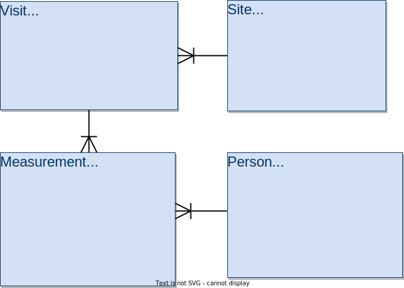

Databases and SQL
Combining Data
Learning Objectives
- Explain the operation of a query that joins two tables.
- Explain how to restrict the output of a query containing a join to only include meaningful combinations of values.
- Write queries that join tables on equal keys.
- Explain what primary and foreign keys are, and why they are useful.
In order to submit our data to a web site that aggregates historical meteorological data, we might need to format it as latitude, longitude, date, quantity, and reading. However, our latitudes and longitudes are in the Site table, while the dates of measurements are in the Visited table and the readings themselves are in the Survey table. We need to combine these tables somehow.
This figure shows the relations between the tables 
The SQL command to do this is JOIN. To see how it works, let’s start by joining the Site and Visited tables:
SELECT * FROM Site JOIN Visited;| name | lat | long | id | site | dated |
|---|---|---|---|---|---|
| DR-1 | -49.85 | -128.57 | 619 | DR-1 | 1927-02-08 |
| DR-1 | -49.85 | -128.57 | 622 | DR-1 | 1927-02-10 |
| DR-1 | -49.85 | -128.57 | 734 | DR-3 | 1930-01-07 |
| DR-1 | -49.85 | -128.57 | 735 | DR-3 | 1930-01-12 |
| DR-1 | -49.85 | -128.57 | 751 | DR-3 | 1930-02-26 |
| DR-1 | -49.85 | -128.57 | 752 | DR-3 | -null- |
| DR-1 | -49.85 | -128.57 | 837 | MSK-4 | 1932-01-14 |
| DR-1 | -49.85 | -128.57 | 844 | DR-1 | 1932-03-22 |
| DR-3 | -47.15 | -126.72 | 619 | DR-1 | 1927-02-08 |
| DR-3 | -47.15 | -126.72 | 622 | DR-1 | 1927-02-10 |
| DR-3 | -47.15 | -126.72 | 734 | DR-3 | 1930-01-07 |
| DR-3 | -47.15 | -126.72 | 735 | DR-3 | 1930-01-12 |
| DR-3 | -47.15 | -126.72 | 751 | DR-3 | 1930-02-26 |
| DR-3 | -47.15 | -126.72 | 752 | DR-3 | -null- |
| DR-3 | -47.15 | -126.72 | 837 | MSK-4 | 1932-01-14 |
| DR-3 | -47.15 | -126.72 | 844 | DR-1 | 1932-03-22 |
| MSK-4 | -48.87 | -123.4 | 619 | DR-1 | 1927-02-08 |
| MSK-4 | -48.87 | -123.4 | 622 | DR-1 | 1927-02-10 |
| MSK-4 | -48.87 | -123.4 | 734 | DR-3 | 1930-01-07 |
| MSK-4 | -48.87 | -123.4 | 735 | DR-3 | 1930-01-12 |
| MSK-4 | -48.87 | -123.4 | 751 | DR-3 | 1930-02-26 |
| MSK-4 | -48.87 | -123.4 | 752 | DR-3 | -null- |
| MSK-4 | -48.87 | -123.4 | 837 | MSK-4 | 1932-01-14 |
| MSK-4 | -48.87 | -123.4 | 844 | DR-1 | 1932-03-22 |
JOIN creates the cross product of two tables, i.e., it joins each record of one table with each record of the other table to give all possible combinations. Since there are three records in Site and eight in Visited, the join’s output has 24 records (3 * 8 = 24) . And since each table has three fields, the output has six fields (3 + 3 = 6).
What the join hasn’t done is figure out if the records being joined have anything to do with each other. It has no way of knowing whether they do or not until we tell it how. To do that, we add a clause specifying that we’re only interested in combinations that have the same site name, thus we need to use a filter:
SELECT * FROM Site JOIN Visited ON Site.name=Visited.site;| name | lat | long | id | site | dated |
|---|---|---|---|---|---|
| DR-1 | -49.85 | -128.57 | 619 | DR-1 | 1927-02-08 |
| DR-1 | -49.85 | -128.57 | 622 | DR-1 | 1927-02-10 |
| DR-1 | -49.85 | -128.57 | 844 | DR-1 | 1932-03-22 |
| DR-3 | -47.15 | -126.72 | 734 | DR-3 | 1930-01-07 |
| DR-3 | -47.15 | -126.72 | 735 | DR-3 | 1930-01-12 |
| DR-3 | -47.15 | -126.72 | 751 | DR-3 | 1930-02-26 |
| DR-3 | -47.15 | -126.72 | 752 | DR-3 | -null- |
| MSK-4 | -48.87 | -123.4 | 837 | MSK-4 | 1932-01-14 |
ON is very similar to WHERE, and for all the queries in this lesson you can use them interchangeably. There are differences in how they affect outer joins, but that’s beyond the scope of this lesson. Once we add this to our query, the database manager throws away records that combined information about two different sites, leaving us with just the ones we want.
Notice that we used Table.field to specify field names in the output of the join. We do this because tables can have fields with the same name, and we need to be specific which ones we’re talking about. For example, if we joined the Person and Visited tables, the result would inherit a field called id from each of the original tables.
We can now use the same dotted notation to select the three columns we actually want out of our join:
SELECT Site.lat, Site.long, Visited.dated
FROM Site JOIN Visited
ON Site.name=Visited.site;| lat | long | dated |
|---|---|---|
| -49.85 | -128.57 | 1927-02-08 |
| -49.85 | -128.57 | 1927-02-10 |
| -49.85 | -128.57 | 1932-03-22 |
| -47.15 | -126.72 | -null- |
| -47.15 | -126.72 | 1930-01-12 |
| -47.15 | -126.72 | 1930-02-26 |
| -47.15 | -126.72 | 1930-01-07 |
| -48.87 | -123.4 | 1932-01-14 |
If joining two tables is good, joining many tables must be better. In fact, we can join any number of tables simply by adding more JOIN clauses to our query, and more ON tests to filter out combinations of records that don’t make sense:
SELECT Site.lat, Site.long, Visited.dated, Survey.quant, Survey.reading
FROM Site JOIN Visited JOIN Survey
ON Site.name=Visited.site
AND Visited.id=Survey.taken
AND Visited.dated IS NOT NULL;| lat | long | dated | quant | reading |
|---|---|---|---|---|
| -49.85 | -128.57 | 1927-02-08 | rad | 9.82 |
| -49.85 | -128.57 | 1927-02-08 | sal | 0.13 |
| -49.85 | -128.57 | 1927-02-10 | rad | 7.8 |
| -49.85 | -128.57 | 1927-02-10 | sal | 0.09 |
| -47.15 | -126.72 | 1930-01-07 | rad | 8.41 |
| -47.15 | -126.72 | 1930-01-07 | sal | 0.05 |
| -47.15 | -126.72 | 1930-01-07 | temp | -21.5 |
| -47.15 | -126.72 | 1930-01-12 | rad | 7.22 |
| -47.15 | -126.72 | 1930-01-12 | sal | 0.06 |
| -47.15 | -126.72 | 1930-01-12 | temp | -26.0 |
| -47.15 | -126.72 | 1930-02-26 | rad | 4.35 |
| -47.15 | -126.72 | 1930-02-26 | sal | 0.1 |
| -47.15 | -126.72 | 1930-02-26 | temp | -18.5 |
| -48.87 | -123.4 | 1932-01-14 | rad | 1.46 |
| -48.87 | -123.4 | 1932-01-14 | sal | 0.21 |
| -48.87 | -123.4 | 1932-01-14 | sal | 22.5 |
| -49.85 | -128.57 | 1932-03-22 | rad | 11.25 |
We can tell which records from Site, Visited, and Survey correspond with each other because those tables contain primary keys and foreign keys. A primary key is a value, or combination of values, that uniquely identifies each record in a table. A foreign key is a value (or combination of values) from one table that identifies a unique record in another table. Another way of saying this is that a foreign key is the primary key of one table that appears in some other table. In our database, Person.id is the primary key in the Person table, while Survey.person is a foreign key relating the Survey table’s entries to entries in Person.
Most database designers believe that every table should have a well-defined primary key. They also believe that this key should be separate from the data itself, so that if we ever need to change the data, we only need to make one change in one place. One easy way to do this is to create an arbitrary, unique ID for each record as we add it to the database. This is actually very common: those IDs have names like “student numbers” and “patient numbers”, and they almost always turn out to have originally been a unique record identifier in some database system or other. As the query below demonstrates, SQLite automatically numbers records as they’re added to tables, and we can use those record numbers in queries:
SELECT rowid, * FROM Person;| rowid | id | personal | family |
|---|---|---|---|
| 1 | dyer | William | Dyer |
| 2 | pb | Frank | Pabodie |
| 3 | lake | Anderson | Lake |
| 4 | roe | Valentina | Roerich |
| 5 | danforth | Frank | Danforth |
Listing Radiation Readings
Write a query that lists all radiation readings from the DR-1 site.
Where’s Frank?
Write a query that lists all sites visited by people named “Frank”.
Reading Queries
Describe in your own words what the following query produces:
SELECT Site.name FROM Site JOIN Visited
ON Site.lat<-49.0 AND Site.name=Visited.site AND Visited.dated>='1932-01-01';Who has been where?
Write a query that shows each site with exact location (lat, long) ordered by visited date, followed by personal name and family name of the person who visited the site and the type of measurement taken and its reading. Please avoid all null values. Tip: you should get 15 records with 8 fields.